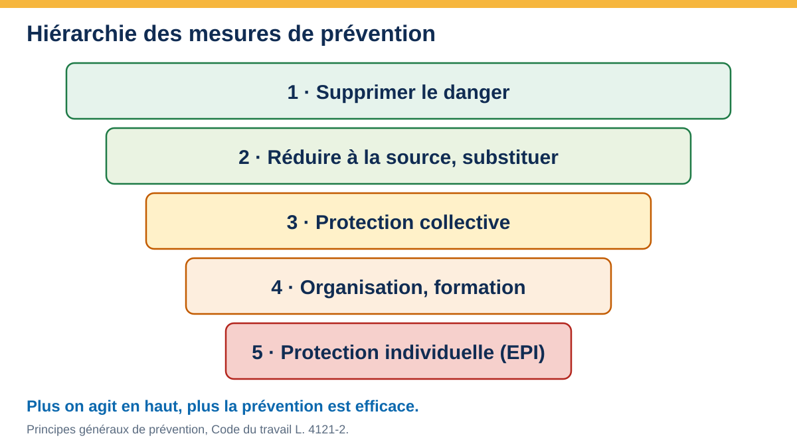

Construire son document unique
Repérer les dangers de votre activité, les coter, planifier les actions et tracer la démarche. Ce support accompagne la séance et reste à votre disposition ensuite.
Programme de la séance
Séance individuelle : le contenu est travaillé sur votre activité réelle. Le tableau de ce support se remplit en direct et reste dans votre navigateur (rien n’est envoyé) ; exportez-le en fin de séance.
Cadre
L’employeur doit évaluer les risques pour la santé et la sécurité de ses salariés et en transcrire le résultat dans un document unique d’évaluation des risques professionnels (DUERP). C’est la trace de la démarche de prévention : dangers repérés, cotation, mesures. Il se fonde sur les principes généraux de prévention du Code du travail.
| Point | Repère |
|---|---|
| Obligation | L’employeur, dès le premier salarié (Code du travail, L. 4121-1 à L. 4121-3, R. 4121-1 et suivants). |
| Contenu | Résultat de l’évaluation par unité de travail ; classement des risques ; inventaire des risques identifiés. |
| Mise à jour | Au moins chaque année dans les entreprises d’au moins 11 salariés ; dans toutes, lors de tout aménagement important, de toute information nouvelle ou après un accident ; la loi fixe aussi l’actualisation des actions de prévention associées. |
| Actions de prévention | Programme annuel de prévention (au moins 50 salariés) ou liste des actions (moins de 50), en lien avec le document. |
| Conservation | Versions successives conservées (durée de 40 ans prévue par la loi du 2 août 2021), à la disposition des salariés, du médecin du travail, du CSE et de l’inspection du travail ; le portail national de dépôt dématérialisé prévu par la loi n’était pas opérationnel au dernier état vérifié (mi-2026) : le dépôt en ligne n’est pas exigé, la conservation par l’employeur l’est ; à revérifier avant la session. |
| Participants | Employeur, salariés, CSE, médecin du travail, salarié compétent en prévention ; conseil possible d’un préventeur ou du service de prévention. |
| Sanctions | Contravention, amende administrative, responsabilité en cas d’accident : voir la section « Sanctions encourues » ci-dessous. |
Sanctions encourues
Ne pas évaluer les risques, ne pas transcrire le résultat ou ne pas le mettre à jour expose l’employeur à plusieurs niveaux de sanctions.
| Manquement | Sanction | Référence |
|---|---|---|
| Ne pas transcrire ou ne pas mettre à jour les résultats de l’évaluation dans le document unique | Amende prévue pour les contraventions de 5e classe : 1 500 € au plus pour une personne physique, 3 000 € en cas de récidive | Code du travail, R. 4741-1 ; Code pénal, art. 131-13 et 132-11 |
| Absence de document unique | Amende administrative pouvant atteindre 4 000 € par travailleur concerné, plafond doublé en cas de nouveau manquement dans les deux ans | Loi n° 2026-534 du 25 juin 2026, art. 48 (Code du travail, L. 8115-1) : entrée en vigueur annoncée au 27 juin 2026, à vérifier |
| Autres manquements de l’employeur aux règles de santé et de sécurité | 10 000 € par travailleur concerné ; récidive : un an d’emprisonnement et 30 000 € | Code du travail, L. 4741-1 |
| Accident du travail ou maladie professionnelle lié à un manquement | Faute inexcusable de l’employeur (majoration de la rente, indemnisation complémentaire) ; selon les faits, poursuites pour blessures ou homicide involontaires ou pour mise en danger d’autrui | Code de la sécurité sociale, L. 452-1 ; Code pénal |
Vocabulaire à maîtriser
| Terme | Sens | Exemple |
|---|---|---|
| Danger | Propriété ou situation susceptible de causer un dommage | Sol mouillé devant la chambre froide |
| Situation dangereuse | Moment où une personne est exposée au danger | Traverser la zone mouillée avec une caisse lourde |
| Événement dangereux | Ce qui fait basculer la situation | Chute avec la charge |
| Dommage | Atteinte à la santé | Entorse avec arrêt de travail |
| Risque | Combinaison de la gravité du dommage et de la probabilité qu’il survienne | Chute à la chambre froide : gravité 2, probabilité 3 |
| Prévention | Mesures qui évitent ou réduisent le risque | Thermostat, procédure, formation |
| Unité de travail | Poste ou groupe de postes aux situations comparables | Stock, chambre froide, zone de vente |
Six étapes

Stock, chambre froide, zone de vente, production ou extérieur, livraisons, entretien, bureau. Une unité regroupe des situations comparables. Questions : qui travaille où, avec quels équipements, à quels horaires ?
Observer le travail réel, interroger les équipes, relire les accidents et presque-accidents, les arrêts de travail, les fiches de données de sécurité, les contrôles. On liste d’abord, on ne note pas encore.
Pour chaque situation : gravité × probabilité, en tenant compte des mesures déjà en place. Même grille pour tous, mêmes critères.
Les risques sont ordonnés par niveau : les plus élevés d’abord. Un risque faible n’est pas oublié : il est surveillé.
Mesure, responsable, échéance, moyen, indicateur. On commence par supprimer ou réduire à la source.
Date, version, participants. Révision après chaque changement important, accident, nouvelle machine, nouvelle activité, nouveau local.
Les neuf principes généraux de prévention
Ils guident le choix des mesures (Code du travail, L. 4121-2).
- Éviter les risques.
- Évaluer les risques qui ne peuvent pas être évités.
- Combattre les risques à la source.
- Adapter le travail à l’homme.
- Tenir compte de l’évolution de la technique.
- Remplacer ce qui est dangereux par ce qui l’est moins.
- Planifier la prévention (technique, organisation, conditions de travail, relations sociales).
- Prendre des mesures de protection collective en priorité sur les mesures individuelles.
- Donner les instructions appropriées aux travailleurs.

Cotation : gravité × probabilité
Grille pédagogique : chaque établissement fixe la sienne et la garde stable d’une évaluation à l’autre.
| Gravité | Définition |
|---|---|
| 1 · Faible | Soin léger, pas d’arrêt de travail |
| 2 · Moyenne | Arrêt de travail, lésion réversible |
| 3 · Grave | Lésion importante, incapacité permanente possible |
| 4 · Très grave | Décès ou incapacité permanente lourde |
| Probabilité | Définition |
|---|---|
| 1 · Très rare | Presque jamais |
| 2 · Rare | Quelques fois par an |
| 3 · Fréquent | Chaque mois |
| 4 · Très fréquent | Chaque jour ou chaque service |

Décrire la situation, pas seulement le danger
Un danger noté seul (« sol glissant ») ne dit rien du risque. Ce qui se cote, c'est une situation de travail : qui, où, quand, avec quoi, avec quelle exposition et avec quelle maîtrise réelle aujourd'hui.
Chercher les causes avec les 5 M. Pour une situation, on interroge cinq familles : Milieu (locaux, ambiance, espace), Matériel (outils, engins, équipements), Méthode (procédures, organisation, consignes), Main-d'œuvre (qui, formation, effectif, fatigue), Matière (produits, charges, denrées). Une cause trouvée dans chaque famille évite de ne traiter que le matériel.
| Question | Ce qu'on note |
|---|---|
| Où, quand, qui ? | Unité de travail, moment, personnes présentes (y compris intérimaires, clients, prestataires) |
| Quelle exposition ? | Fréquence et durée (chaque jour, chaque semaine, quelques fois par an) |
| Quelle maîtrise réelle ? | Ce qui existe vraiment aujourd'hui, pas ce qui est prévu sur le papier |
| Quel dommage possible ? | Le pire réaliste, pour la gravité |
Déclic. On ne note pas un danger. On note une situation, l'exposition et la maîtrise réelle.
Analyser mon activité (démarche guidée)
Décrivez votre activité réelle et les situations de travail : l’outil propose les familles de dangers à examiner, les preuves à rechercher sur place, les mesures à envisager et les références officielles. C’est une aide au repérage, pas une évaluation : seule l’observation du travail réel et la parole des salariés valident un danger.
Familles de dangers fréquentes (commerce de produits frais, vente directe, production)
Liste de départ à adapter : toutes les familles ne concernent pas toutes les activités, et d’autres peuvent s’ajouter.
Manutention, port de charges et TMS
Caisses de légumes, cagettes, palettes, sacs de terreau, gestes répétitifs (cueillette, mise en rayon, caisse), station debout ou penchée.
- Chariot, diable, transpalette ; charges limitées, aide à deux.
- Plan de travail et présentoirs à bonne hauteur ; limiter le travail penché.
- Rotation des tâches, pauses, étirements.
- Formation gestes et postures (voir l'action A260BGA pour le contenu).
Chutes de plain-pied et de hauteur
Sols mouillés, terre, feuilles, seuils, marches, escabeau, mezzanine ou étagères hautes, accès au stock.
- Sols propres et antidérapants, nettoyage au fil de l'eau.
- Éclairage suffisant, rangement bas, passages dégagés.
- Escabeau stable ; interdiction de monter sur les caisses ou les cartons.
- Chaussures fermées antidérapantes.
Outils tranchants et coupures
Couteaux, serpettes, sécateurs, cutter, trancheuse, verre ou conserves cassés.
- Outils affûtés, rangés, gaine ou étui.
- Gants anti-coupure pour les opérations à risque.
- Ramassage du verre avec pelle et balayette, jamais à mains nues.
Machines, véhicules et engins
Si présents : motoculteur, tracteur, broyeur, transpalette électrique, chariot, véhicule de livraison, hayon.
- Inventaire du matériel et des conducteurs ; consignes d'utilisation.
- Protecteurs en place ; arrêt et consignation avant intervention.
- Aptitude et autorisation de conduite selon le matériel (à vérifier sur place).
- Circulation séparée entre piétons, clients et engins.
Risque chimique (produits d'entretien, traitements)
Détergents, désinfectants, produits d'entretien ; produits de traitement ou fertilisants si activité de production.
- Inventaire des produits, étiquettes lisibles (pictogrammes CLP), fiches de données de sécurité accessibles.
- Pas de mélange ; stockage séparé, rétention.
- Substituer par moins dangereux quand c'est possible.
- Gants et lunettes adaptés ; pour les produits phytopharmaceutiques, règles spécifiques (certiphyto, MSA) à vérifier si concerné.
Ambiances thermiques, intempéries et froid
Chaleur sous serre ou en magasin, froid en chambre froide, intempéries en extérieur, soleil.
- Eau potable à disposition, pauses, vêtements adaptés.
- Ouverture intérieure et alarme de la chambre froide, durée limitée.
- Plan canicule ou grand froid (information, adaptation des horaires).
Électricité et incendie
Prises, rallonges, appareils humides, coffret, chambre froide, stockage de cartons, issues.
- Installation vérifiée (contrôle périodique), dispositifs différentiels.
- Pas de rallonge ni de multiprise en usage permanent.
- Extincteurs adaptés et vérifiés, issues libres, consigne d'évacuation.
Locaux en travaux et co-activité
Travaux de rénovation en cours, entreprises extérieures, livreurs, poussières, passages encombrés.
- Plan de prévention ou protocole de sécurité avec les entreprises extérieures (selon les cas, L. 4511-1 et suivants, R. 4512-6 et suivants).
- Zones de travaux balisées, séparées de la circulation des salariés et du public.
- Accueil des intervenants, consignes, horaires de livraison.
Public, caisse, isolement et organisation
Clientèle, tension en période de forte affluence, travail isolé, horaires matinaux, trajets.
- Consignes en cas d'agressivité, relais d'équipe.
- Dispositif d'alerte pour le travail isolé.
- Planning anticipé, repos garantis.
Hygiène et risque biologique
Terre, déchets organiques, nuisibles, denrées abîmées, lavage des mains ; lien avec le plan de maîtrise sanitaire.
- Point d'eau et savon accessibles ; gestion des déchets.
- Vaccination antitétanique à jour (conseil du médecin du travail).
- Coordination avec les règles d'hygiène alimentaire applicables.
Mon tableau d’évaluation
Ajoutez les situations réelles de votre activité, ou chargez les exemples puis adaptez-les : le score et le niveau se calculent tout seuls. Le tableau est enregistré dans votre navigateur (rien n’est envoyé). Exportez-le pour le reprendre dans votre document unique.
| Unité de travail | Situation dangereuse | G | P | Score | Mesure ou action |
|---|
Plan d’action
Après la cotation, on transforme les risques moyens et élevés en actions datées. Le bouton « Générer le plan d’action » reprend les lignes dont le score est d’au moins 5, de la plus haute à la plus basse. Complétez le responsable, l’échéance et l’indicateur.
| Colonne | À préciser |
|---|---|
| Action | Verbe d’action, mesurable : « installer un tapis antidérapant devant la chambre froide » |
| Responsable | Une personne, pas un service |
| Échéance | Une date |
| Moyen | Budget, temps, formation |
| Indicateur | Comment sait-on que c’est fait et efficace ? (nombre de chutes, contrôle visuel) |
| État | À faire, en cours, fait, vérifié |
Une mesure est-elle valable ?
Hiérarchie. Avant de choisir, on cherche dans cet ordre : supprimer le danger (changer de méthode, éviter l'exposition) ; protéger collectivement (balisage, protecteurs, aides à la manutention) ; organiser (planning, consignes, autorisations, contrôles) ; en dernier, les équipements de protection individuelle (adaptés, réellement portés). « EPI partout » est une réponse pauvre quand on pouvait mieux faire.
Sept questions pour juger une mesure. Elle est valable si elle :
- est durable dans le temps ;
- facilite le travail au lieu de le compliquer ;
- est rapide à mettre en œuvre ;
- ne crée pas d'autres risques ;
- agit en amont de l'accident ;
- est valable pour plusieurs postes ;
- est conforme à la réglementation.
Sans preuve, la mesure est fragile. Pour chaque action, on décide de ce qui montrera qu'elle est faite et qu'elle marche :
- photo du balisage ou de l'aménagement, plan de circulation ;
- liste de contrôle datée et signée ;
- fiche de données de sécurité accessible, consigne sur les équipements de protection ;
- rapport de vérification (électricité, extincteurs) ;
- compte rendu d'événement, même quand il n'y a « rien à signaler » ;
- document unique et plan d'actions mis à jour après toute anomalie.
Un document vivant : mise à jour et suivi
Le document unique se met à jour, il ne se classe pas. Déclencheurs :
- Accident du travail, maladie professionnelle, presque-accident.
- Nouvelle machine, nouveau produit, nouvelle activité ou nouveau procédé, aménagement des locaux.
- Changement d’organisation, d’effectif ou d’horaires.
- Remarque du médecin du travail, du CSE, d’un salarié ou d’un contrôle.
- Échéance annuelle de revue.
Indicateurs simples à suivre : nombre d’accidents et de jours d’arrêt, presque-accidents déclarés, actions du plan réalisées dans les délais, formations à jour (SST, incendie, gestes et postures).
Exercices
Exercice flash (20 min) : de 10 dangers à 5 risques
À partir d'une photo ou d'une situation vécue dans l'entreprise :
- 10 minutes : lister 10 dangers, puis les regrouper en 5 risques prioritaires.
- 10 minutes : pour chaque risque, une mesure (en suivant la hiérarchie) et une preuve.
Micro-scénario (10 min) : des travaux à côté de la zone de vente
« Une entreprise extérieure arrive et commence à travailler pendant l'ouverture. Que faites-vous ? »
- Stop : on évalue avant de laisser faire.
- Informer et coordonner : qui fait quoi, quand, où ; zone, circulation et balisage ; qui passe en premier.
- Tracer : plan de prévention ou protocole de sécurité, note de coordination (Code du travail, R. 4512-6 et suivants pour le plan de prévention).
Après un accident ou un presque-accident : remonter aux causes
- Recueillir les faits, sans interpréter : qui, quoi, où, quand, comment.
- Construire l'arbre des causes : chaque fait s'explique par un ou plusieurs faits antérieurs, jusqu'aux causes organisationnelles.
- Rechercher des mesures au niveau des causes (pas seulement de la victime), les juger avec les sept questions ci-dessus, puis mettre à jour le document unique.
Cas guidé : un petit commerce de produits frais (fictif)
Une entreprise de 6 salariés vend des fruits et légumes en direct (stock, chambre froide, zone de vente) et rénove une partie de ses locaux. Constat : deux chutes devant la chambre froide, des douleurs de dos au déchargement, des travaux en cours à côté de la zone de vente.
- Découper : stock, chambre froide, zone de vente, livraison, entretien, bureau.
- Identifier : sol mouillé, caisses lourdes, passage encombré par les travaux, produits d’entretien.
- Coter : glissade G2 × P4 = 8 ; manutention G2 × P4 = 8 ; co-activité travaux G3 × P3 = 9 ; incendie G4 × P1 = 4 (traité quand même).
- Classer : co-activité (9), puis glissade et manutention (8), incendie (mesures de base).
- Planifier : balisage et plan de prévention (gérant, avant la reprise des travaux), tapis et évacuation d’eau, chariot et aide à deux, exercice d’évacuation.
- Tracer : version 1 datée, participants, revue dans douze mois ou après tout accident.
À discuter. Quelle mesure supprime le danger plutôt que de le signaler ? Qui est responsable de chaque action ? Quel indicateur montrera que la glissade a baissé ?
Liste de contrôle : mon document est-il complet ?
- Toutes les unités de travail sont couvertes (y compris livraisons, entretien, bureau).
- Chaque danger est décrit par une situation concrète.
- La cotation utilise une grille écrite et stable.
- Les mesures existantes sont distinguées des mesures à prévoir.
- Chaque action a un responsable, une échéance, un indicateur.
- Les salariés ont été consultés ; les représentants ont accès au document.
- La date et la version figurent ; la revue est planifiée.
- Le document est conservé avec ses versions précédentes.
Pour aller plus loin (liens officiels)
Pages de l'INRS (organisme de référence en prévention des risques professionnels), consultées le 21 octobre 2026.
- INRS · Document unique d'évaluation des risques : ce qu'il faut retenir (mis à jour le 18/10/2024)
- INRS · Document unique : quelles obligations ? (focus juridique) (mis à jour le 04/10/2024)
- INRS · Évaluation des risques professionnels : de quoi parle-t-on ? (mis à jour le 17/10/2023)
- INRS · Webinaire « Pourquoi et comment évaluer les risques professionnels ? Document unique et démarche de prévention » (vidéo de 56 min, novembre 2024)
Les textes du Code du travail (L. 4121-1 et suivants, R. 4121-1 et suivants) sont à lire sur Légifrance. Les règles évoluent : se fier à la version en vigueur.
Sources et limites
- Méthode, critères d'une mesure valable, hiérarchie et preuves : supports de formation de l'auteur (CAP IFCA, module PSE ; démarche de prévention en 5 étapes), adaptés ici.
- Code du travail : L. 4121-1 à L. 4121-5, R. 4121-1 à R. 4121-4, R. 4741-1 ; L. 4741-1 ; L. 8115-1 (amende administrative) ; Code de la sécurité sociale L. 452-1.
- INRS : démarche d’évaluation des risques professionnels et outils OiRA (choisir le secteur correspondant à l’activité).
- Si l’activité relève du régime agricole : MSA, santé-sécurité au travail.
- Assurance Maladie – Risques professionnels ; Carsat Sud-Est.
Support pédagogique : il ne remplace ni les textes en vigueur, ni l’analyse sur place. Montants, seuils et calendriers de la loi de juin 2026 sont à revérifier sur Légifrance avant tout usage contractuel. Images et schémas : conception RMBD.